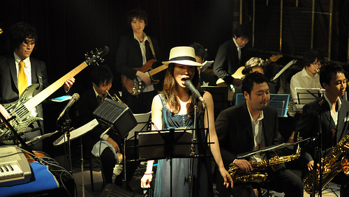

It's time to blow the scene
The Seatbelts es un proyecto que adquiere forma de una big band de jazz al estilo clásico, pero que no se restringe a este género. La banda fue formada en 1998 como un proyecto efímero, con el objetivo de componer e interpretar la banda sonora de la más tarde exitosa serie de anime Cowboy Bebop. El encargo y, por tanto, la dirección del proyecto recayó en la reconocida compositora japonesa Yoko Kanno, que cuenta con un gran prestigio en la confección de bandas sonoras de series de anime. El grupo publicó varios álbumes que incluían numerosos temas para los 24 episodios de la serie y para Knocking on Heaven's door, una película adicional de larga duración. Tras ello, celebraron un gran concierto en Tokio, y luego se disolvieron. Volvieron a reunirse en 2006 para la grabación de varios temas que se incluyeron en un recopilatorio personal de Yoko Kanno, pero nunca más han vuelto a actuar juntos. Sin embargo, su legado musical ha calado bien hondo no sólo en los fans del anime sino también en todos los amantes de la buena música y se han convertido ya en una joya obligada para todo melómano que se precie de serlo.
